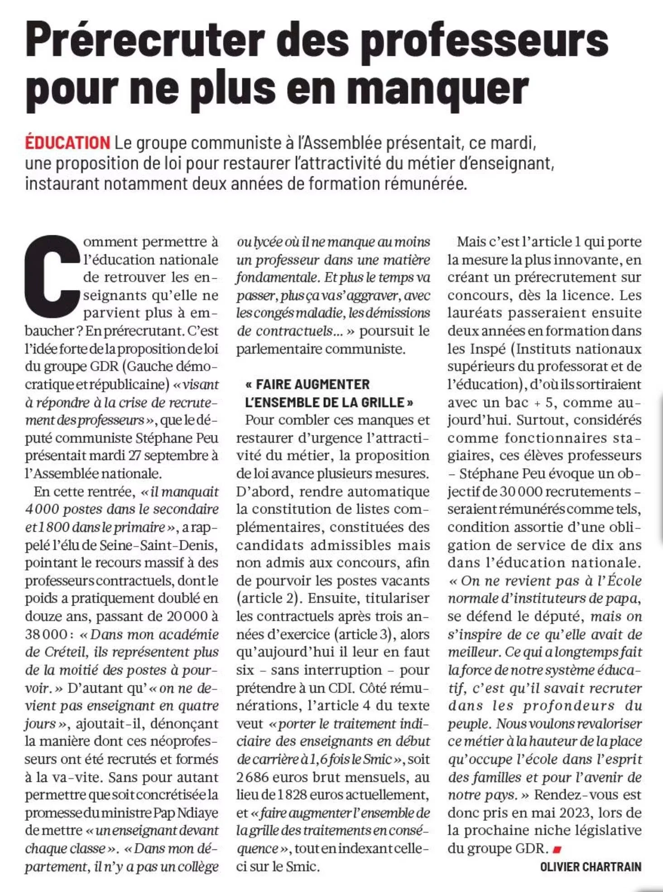

Publication relayée par le PCF 79
Éducation. Le groupe GDR présente une proposition pour le métier d’enseignant
Date de mise à jour indiquée par Facebook · 28 septembre 2022
Texte de la publication · Les député·e·s du groupe GDR
Après une rentrée calamiteuse marquée par un nombre record de postes de professeurs non-pourvus, nous avons présenté notre proposition de loi, portée par Stéphane Peu et Frédéric Maillot, pour rendre au métier d'enseignant son attractivité.
Lire l'article paru dans l'Humanité de ce jour

Sources
Les député·e·s du groupe GDR · publication relayée par le PCF 79 · bibliothèque Facebook · AR-0002-FB-01852
À lire aussi · Coupes budgétaires : le sacrifice de la recherche et l’enseignement supérieur public · Le lien d’origine